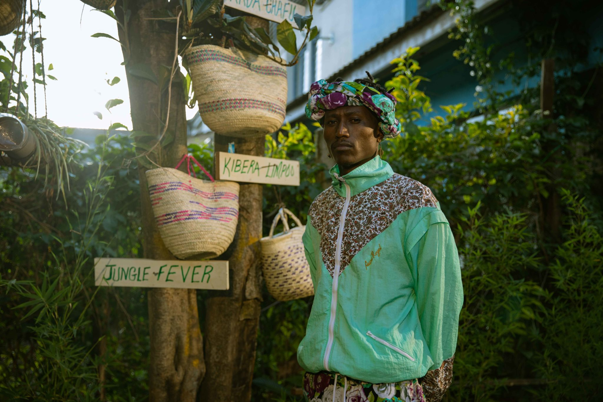

SEPTEMBER, 21, 2021
Kenyan Hip-Hop Artist Octopizzo on the Power of Music and Entrepreneurship
Henry Ohanga a.k.a. Octopizzo. Photo: Octopizzo Foundation
- words by Sawsen Khechab
Interviewed and edited by Ka Man Mak
From his home in Nairobi, the rapper, entrepreneur, philanthropist and head of the Octopizzo Foundation that bears his name reflects on his journey, his foundation and the Refugeenius project. His internationally acclaimed music album, ‘Refugeenius’ produced with refugee artists were played at Grønland Kirke during the Oslo Afro Arts Festival, alongside audiovisual materials from refugee musicians and paintings from Khalid Shatta. Native of Kibera, the largest slum in Kenya, Henry Ohanga goes by his stage name, Octopizzo describes his first steps in music as having been an act of rebellion against the world, “Music is like speaking alone but then everyone listens. This freedom that comes with the artist was everything … it was a rebellious act against people representing you in ways that it’s not you.” Back when he was a teenager, the rapper discovered his artistic abilities and their power; he realises that he can make himself heard and has begun a fight against the prejudices and stereotypes that hover above his roots. Later on, the work produced through his highly profiled humanitarian projects with UNHCR, the “Artists for Refugees” and “Refugeenius” projects, were also aimed to break taboos and stereotypes about refugees. Octopizzo is a strong advocate for using arts, music and sports to empower vulnerable and disadvantaged youth. In the humanitarian projects, he mentored refugees and youth. He studied social impact strategy at the University of Pennsylvania, and leadership at Harvard Kennedy University. He has also appeared on TEDX where he and other refugee artists presented the Refugeenius project.
Entrepreneurship in the Work
Music, or art in general, in his eyes, is closely linked to the concept of entrepreneurship. A concept he defines as “individuality and just believing in yourself.” Coming from a place where nobody was a boss, in the slum, the artist points out that “having this kind of mentality that you can be your own boss, not having to be employed, and be actually able to make a living out of something you love, was always such a big deal for us. All my peers were just looking for school and are employed after.” It is with a rebellious spirit that the artist pushes through in his humanitarian projects, to empower young artists trapped in a cacophonic environment that prohibits them from acknowledging their own potential or taking actions to build their professional paths through their passions. His work is a testament to believing in one’s own abilities; winning and being nominated for numerous national and international awards, such as the Grammy Awards.
Artistic work from Octopizzo Foundation. Photo: Octopizzo Foundation
Entrepreneurship, in his eyes, is also closely linked with investment. The philanthropist admits to preferring to invest in the human potential, “I believe in investing in people, because when you invest in a person you change a whole generation […] you even spark another mentality in them to do that for another person, so it becomes like a chain of action of people who believe in other human beings […] Which is very rare in our society.” Having grown up in an environment where the idea of making a living through one’s passion gave rise to scornful laughter. He shares intimately, “one person believed in me and it pushed me forward, he didn’t even need to invest in me but just telling me, ‘yes, you can do it’ […] he was my best friend and everybody else didn’t matter.”
The Refugeenius Project
Over the course of three albums, Octopizzo has used his platform to build youth projects in Kibera, Africa’s largest slum, and also in refugee camps across Kenya through the Octopizzo Foundation. He acknowledges that “what we did at the foundation are the most valuable things I have ever done as an artist and as a human being.” In 2015, he founded not-for-profit Octopizzo Foundation to realise the untapped potential that often resides in urban slums, rural areas and refugee camps through various artistic expressions, sports, entrepreneurship and mentorship. Through programs created by Octopizzo Foundation, there is an aim to liberate the underprivileged from “the cycle of desperation and dependency”. Octopizzo’s community-led approach to activism helped change the mentality of people and how people envision people from the slum and the refugee camps, he concludes that henceforth “they started to see us as humans.” But the road is long and the path is winding.

An audiovisual display for ‘Refugee|ni|us – Refugee, genius, us’ exhibit at Grønland Kirke during Oslo Afro arts Festival. Photo: Ka Man Mak
The foundation remains dependent on donors and funders who, following the pandemic, have been the most affected, slowing down projects and programs. The rapper confesses caressing the dream of wanting to build “a hub one day that runs continuously, that is sustainable and that the community can have over and over, where it’s like a centre where young people can come and it becomes a path where they pass through as they grow and get the skills they want to acquire for people who can’t go to college.” In an effort to address and change public perception of refugees, the Refugeenius project was born in 2015 in collaboration with the UNHCR and under another common project, ‘Artists for Refugees’. The artist, aware of the negative connotation of the word “refugee”, emphasises the importance of this work in reshaping public opinion, “Refugeenius was about the genius part of being a refugee.” He notes that internally, the previous UN lead programs had focused on the provision of water, food, and shelter in these camps. However, over the years, young people found themselves frustrated at the fact of being withdrawn from the world and in a state of enforced stagnation. The artist notes that through the Refugeenius project, “We were able to see what art can do for them, expressing what they were actually going through, through their paintings, music and their performances, that was mind-blowing.”
More Than Just Music
Although the album produced by various refugee artists remains the most popular aspect of the project, Octopizzo recounts that it was only one project among a panoply of projects offered by the program, “Music was just one of the things, it was a full four-year program on entrepreneurship, networking, marketing and just using your skills to grow and also survive on those streets. Most refugees get relocated, so we were also preparing them for their relocation, on matters of how to fit into society.” He clarifies that, “It was a very personalised program for these kids. We had 300 young people that participated in the program, but the ones that actually did the album were 18 kids, besides that we had also visual artists, dancers, cultural leaders and basketball players.” For Octopizzo, success is not defined by one way only and he “always wanted people to see the different ways of living.” As long as you put your mind to it, it will eventually pay off, “For some it takes 10 years, 1 year or 1 month, you have to be patient. The whole point is that there’s not only one way to win.”
‘Refugee|ni|us – Refugee, genius, us’ exhibit at Grønland Kirke during Oslo Afro arts Festival. Photo: Ka Man Mak
The response to the hit album, ‘Refugeenius’, was amazing he recalls, “It was intense, and many people came out and supported them in many ways, it backed other programs also, other companies started doing similar projects. The refugee camp in Jordan wanted the same program and we started connecting with the refugees all over the world, we went to Geneva to showcase Refugeenius and it became bigger. I was overwhelmed because we didn’t expect it to be that big.” From his point of view, the direct impact of this project was also that these young people were able to rebuild themselves after their traumas. When reflecting on their journey, he notes that at the end, “their mindset changed, and they realized they’re not locked up in that camp. They have the freedom to say how they feel, and somewhere else in the world people are feeling like that too. They realized they are not alone in this and they became stronger. This experience has strengthened them.”
Refugees Are Real Human Beings
Their work for the Refugeenius project was featured at Grønland Kirke (translate: Grønland Church) alongside a selection of paintings from Sudanese Khalid Shatta during Oslo Afro Arts Festival in August. Audiovisual materials by musicians living in refugee camps in Kenya were displayed along the nave of the church, with the main screen displaying the Refugeenius music videos. In front of an international audience, the head of the foundation who mentored these young people wishes that their production will inspire people to stop treating refugees as a problem. “I want them to realize that these are real human beings who bring more to the table than anybody would ever think […] Opportunity changes everything […] When you don’t treat them like a problem, and when you don’t judge them based on their countries or what happened to them, they’re the most normal human beings, they might be you in another world, and they want the same thing, whether in the camps or the slums, they want to be happy, have their own house, have a family, they want to go to a movie and they like the same music. This is what I want this side of the world to see when watching some of the materials the kids did, realizing who they are, and stop thinking that they’re are messing the place up or taking over our jobs. We have an ecosystem that sustains itself so let those kids evolve, travel and get their chances.” Through his foundation, Octopizzo had conducted similar projects in countries like Australia with the aborigines. His dream is to be able to reach the refugees all over the world and let them be proud, and showcase their work wherever they are.
This article is part of a journal series produced by The Oslo Desk in collaboration with Oslo Afro Arts Festival.